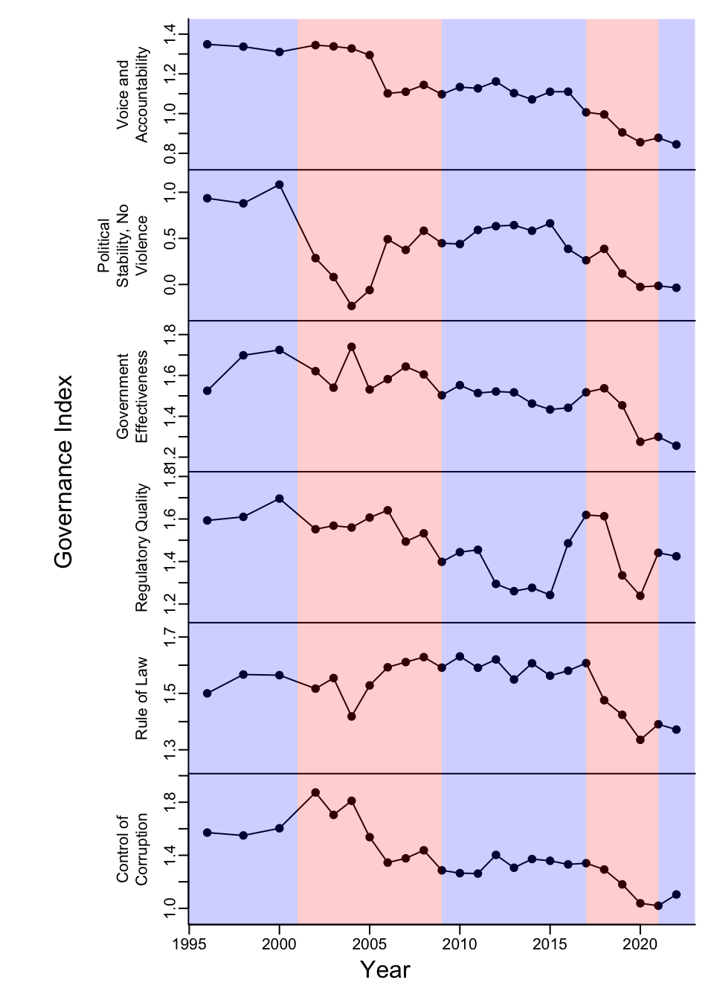

Background
Carbon projects reduce or remove greenhouse gasses (GHG) in the atmosphere to mitigate climate change and earn carbon credits. One carbon credit is earned for every metric ton of CO2 (or a GHG equivalent) a project can prove it removed from the atmosphere or avoided emitting to the atmosphere. Carbon projects in agriculture, forestry, and other land-use (AFOLU) sectors are often required to contribute a fraction of the total carbon credits they earn to a buffer pool of carbon, which acts like an insurance policy.
Buffer pools provide insurance that the climate mitigation a project achieves is not reversed after the credits credits are issued. For example, CO2 removed from the atmosphere in a reforestation project may be released later should a wildfire destroy part of the project. However, as long as the amount of re-emitted CO2 caused by wildfire does not exceed that of the buffer pool, there is still a net removal of CO2 from the atmosphere, and climate mitigation is achieved.
The size of buffer pools will vary among projects because each is likely to face unique reversal risks. Some carbon registries, like Verra and ACR attempt to identify the many types of reversal risks and quantify them as a way to estimate the size of potential buffer pools. Conversely, other registries require their carbon projects to contribute a given percentages (e.g. 20% or 7%) of their total GHG avoidances/removals to a buffer pool regardless of actual reversal risks.
Of the various factors that can influence reversal risk, Verra and ACR identify political risk, which is of particular interest to me right now given that the US is currently in the midst of a presidential election cycle. Political risk is quantified slightly differently among ACR and Verra, but both use Governance Indicators published by the World Bank. There are 6 different governance indicators: 1) Voice and Accountability, 2) Political Stability and Absence of Violence/Terrorism, 3) Government Effectiveness, 4) Regulatory Quality, 5) Rule of Law, and 6) Control of Corruption. More about how theses indicators are defined can be found in the World Bank research paper where they are explained in detail: The Worldwide Governance Indicators: Methodology and Analytical Issues.
Ultimately, these governance indicators are used to deduct a considerable portion of a project’s total GHG mitigation for contribution to a buffer pool. In the US, where I’m developing reforestation projects as part of a team, political risk currently results in a ≥1-2% deduction of the total carbon project for the buffer pool, depending on the registry. As you might expect, these government indicators change through time as governance changes and this can alter reversal risks and the size of the buffer pool contribution.
So, in the spirit of politics and minimizing reversal risks to reforestation projects I was curious to know - does political risk increase more with when there are democrat or republican presidencies? Unfortunately, I think this is a difficult question to address directly because of lagging policies. However, after plotting the all of the available estimates for the different governance indicators I was surprised to see that all indicators in the US, except the “Rule of Law”, exhibited statistically significant declines (Fig. 1), which is also really interesting.
Figure 1: All available data for (1996-2022) the Wold Bank’s Governance Indices in the United States. Blue colored sections correspond to periods of democrat presidencies and red sections correspond to republican presidencies.
Given that each governance index is decreasing, this means that the political risk might increase and result in greater buffer pool contributions for future AFOLU projects. I think it’s a big assumption, but let’s assume that each US governance indicator will continue to decrease at its current rate based on the available 1996-2022 data. By 2050, when the US will need to remove 1 billion tons of GHG from the atmosphere per year to stay on track to meet its net-zero goals, the buffer contribution from political risk alone for AFOLU projects will be 6% for Verra and 2.9% for ACR (Fig. 2).
Figure 2: The increase in the buffer pool contribution percentage from AFOLU projects for Verra and ACR from 2023 to 2050.
This predicted increase in the political risk by year 2050 is speculative, but it does raise some important questions. For example, will political risk plus other probable increases in risks - like those associated with climate change-related natural disasters - make financing future AFOLU projects more difficult in the US? Will registries change how much political risk is weighted for buffer pool contributions? Will AFOLU project developers shift to the use of registries with more lax buffer pool requirements (and how would this change perceived credit quality)? Perhaps most importantly, do we know how well political risk actually predicts a reversal event? My cursory Google search didn’t turn up any promising information on this last question.
Obviously, there are a lot of questions that could be explored with the governance data and regarding political risk, but for now, I’ve satisfied my curiosity. However, if political risk does increase in the future, it would equate to potentially massive buffer pool contributions. Just for perspective, a study led by The Nature Conservancy suggests that natural climate solutions, which typically fall under the AFOLU category, have the potential to provide 1.2 billion tons of GHG mitigation potential. Assuming that magnitude AFOLU projects is implemented by 2050, then 36-72 million tons of GHG mitigation need to be deducted for political risk alone.